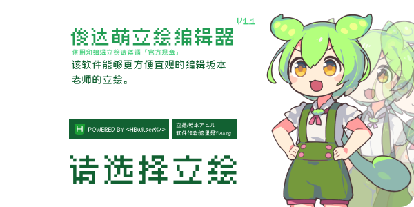

表情包设置
图层
大小
100%
位置(也可直接拖拽)
X:
256px
Y:
256px
旋转
0°
翻转
背景颜色
字幕
文字:
字体:
描边:
字体大小:
NaNpx
距底部:
NaNpx
描边大小:
NaNpx
设置
朗读对口型
音频
未选择
未选择音频
预览
0.0 / 0.0s
立绘样式关键帧
请先选择音频
片段 1
开始
结束
口型
灵敏度:
100%
平滑:
40%
动画
幅度:
50%
频率:
3.0Hz
片段衔接
挤压时长:
0.15s
回弹时长:
0.40s
挤压:
50%
回弹:
50%